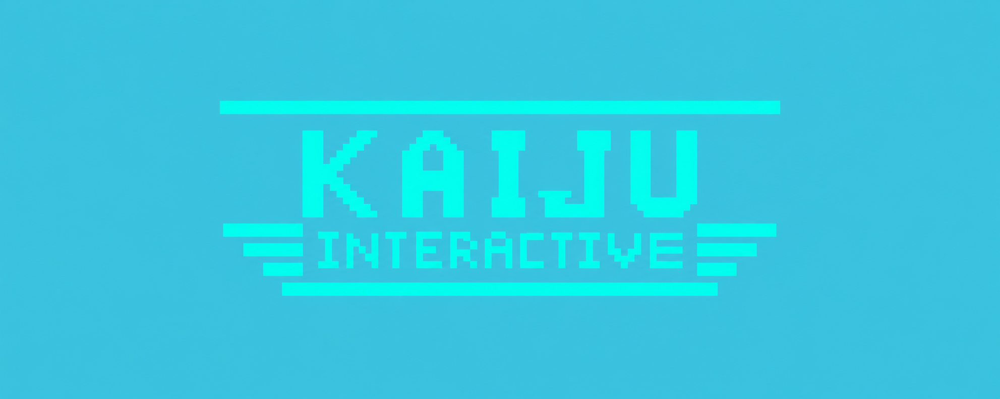
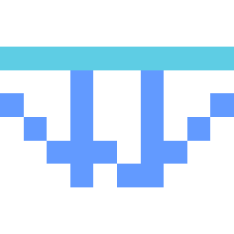
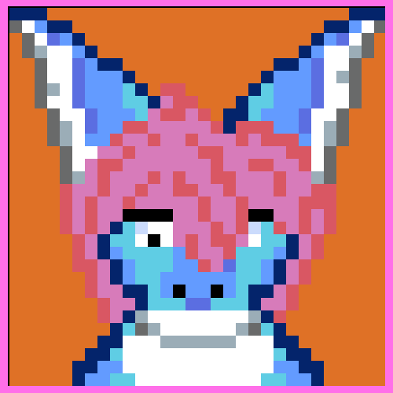
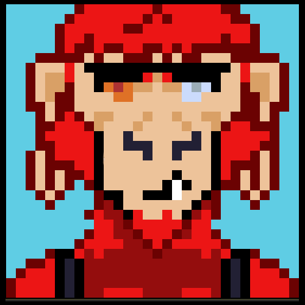

STRATEGY
Undies Chess
Classic chess with an unconventional wardrobe. Challenge a friend or take on the CPU in this underwear-themed strategy game.
PLAY ON ITCH.IO →
INDEPENDENT GAME DEVELOPMENT STUDIO
Creating games, building software, and exploring strange new worlds. Welcome to Kaiju Interactive.
PRESS START
From arcade experiments to mythology-inspired adventures, there's always something strange happening at Kaiju Interactive.
Classic chess with an unconventional wardrobe. Challenge a friend or take on the CPU in this underwear-themed strategy game.
PLAY ON ITCH.IO →
Catch falling underwear, chase your high score, and survive as the difficulty increases. Three misses and it's game over!
PLAY ON ITCH.IO →
A tiny arcade adventure starring a very determined pair of underwear. Dodge obstacles and see how far you can fly!
PLAY ON ITCH.IO →Enter ancient Egypt in a mythology-inspired romantic adventure. Meet the gods, make choices, and discover where your heart will lead.
PLAY THE DEMO →BEHIND THE SCENES
Game development is only part of the adventure. Here are some of the other things being built at Kaiju Interactive.
A custom C++ game engine built with raylib. Learning how games work from the inside out.
A custom programming language and compiler. Because apparently making games wasn't complicated enough.
A radio signal analysis project inspired by astronomy, SETI, and the search for signals among the stars.
A custom desktop environment bringing together games, software, and experimental ideas.

I'm an independent game developer with a love for retro games, pixel art, mythology, astronomy, and creating strange little worlds.
Kaiju Interactive is my home for games, software experiments, and whatever other ideas happen to escape my brain.
From C++ and raylib to Python, Rust, and PICO-8, I'm always learning something new.
Big ideas. Small studio. Tight Undies.

I'm the beta tester and inspirational sounding board here at Kaiju Interactive.
From testing new games to helping ideas take shape, I'm here to support the creative process and help make every project a little better.
Beta Tester & Inspirational Sounding Board
TRANSMITTING ACROSS THE INTERNET
FIND US ONLINE
Follow Kaiju Interactive for game updates, development adventures, pixel art, and an unreasonable amount of underwear.